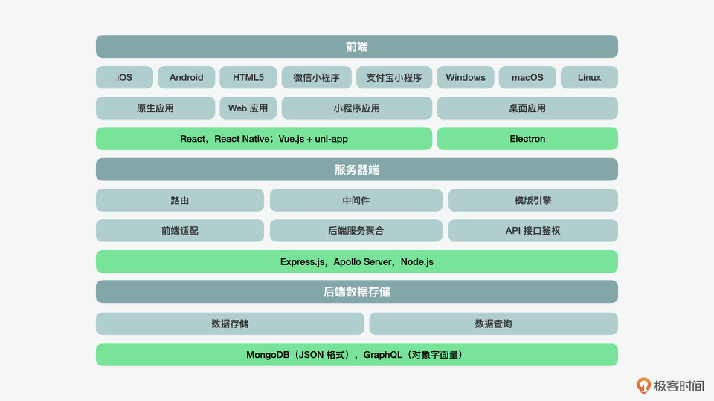

- 00 开篇词 JavaScript的进阶之路.md.html
- 01 函数式vs.面向对象：响应未知和不确定.md.html
- 02 如何通过闭包对象管理程序中状态的变化？.md.html
- 03 如何通过部分应用和柯里化让函数具象化？.md.html
- 04 如何通过组合、管道和reducer让函数抽象化？.md.html
- 05 map、reduce和monad如何围绕值进行操作？.md.html
- 06 如何通过模块化、异步和观察做到动态加载？.md.html
- 07 深入理解对象的私有和静态属性.md.html
- 08 深入理解继承、Delegation和组合.md.html
- 09 面向对象：通过词法作用域和调用点理解this绑定.md.html
- 10 JS有哪8种数据类型，你需要注意什么？.md.html
- 11 通过JS引擎的堆栈了解闭包原理.md.html
- 12 JS语义分析该用迭代还是递归？.md.html
- 13 JS引擎如何实现数组的稳定排序？.md.html
- 14 通过SparkPlug深入了解调用栈.md.html
- 15 如何通过哈希查找JS对象内存地址？.md.html
- 16 为什么环形队列适合做Node数据流缓存？.md.html
- 17 如何通过链表做LRU_LFU缓存？.md.html
- 18 TurboFan如何用图做JS编译优化？.md.html
- 19 通过树和图看如何在无序中找到路径和秩序.md.html
- 20 算法思想：JS中分治、贪心、回溯和动态规划.md.html
- 21 创建型：为什么说Redux可以替代单例状态管理.md.html
- 22 结构型：Vue.js如何通过代理实现响应式编程.md.html
- 23 结构型：通过jQuery看结构型模式.md.html
- 24 行为型：通过观察者、迭代器模式看JS异步回调.md.html
- 25 行为型：模版、策略和状态模式有什么区别？.md.html
- 26 特殊型：前端有哪些处理加载和渲染的特殊“模式”？.md.html
- 27 性能：如何理解JavaScript中的并行、并发？（上）.md.html
- 28 性能：如何理解JavaScript中的并行、并发？（下）.md.html
- 29 性能：通过Orinoco、Jank Busters看垃圾回收.md.html
- 30 网络：从HTTP_1到HTTP_3，你都需要了解什么？.md.html
- 31 安全：JS代码和程序都需要注意哪些安全问题？.md.html
- 32 测试（一）：开发到重构中的测试.md.html
- 33 测试（二）：功能性测试.md.html
- 34 测试（三）：非功能性测试.md.html
- 35 静态类型检查：ESLint语法规则和代码风格的检查.md.html
- 36 Flow：通过Flow类看JS的类型检查.md.html
- 37 包管理和分发：通过NPM做包的管理和分发.md.html
- 38 编译和打包：通过Webpack、Babel做编译和打包.md.html
- 39 语法扩展：通过JSX来做语法扩展.md.html
- 40 Polyfill：通过Polyfill让浏览器提供原生支持.md.html
- 41 微前端：从MVC贫血模式到DDD充血模式.md.html
- 42 大前端：通过一云多端搭建跨PC_移动的平台应用.md.html
- 43 元编程：通过Proxies和Reflect赋能元编程.md.html
- 结束语 JavaScript的未来之路：源于一个以终为始的初心.md.html
- 捐赠
42 大前端：通过一云多端搭建跨PC_移动的平台应用
你好，我是石川。
如今的 JavaScript 早已不只是可以满足 Web 开发，更是可以用于后端服务器，甚至数据库相关的开发。在上一讲，我们聊到了“微”前端，今天，我们再来看看“大”前端这种前端驱动的开发模式和传统的开发模式有什么不一样，以及如何利用大前端来实现前后端全部所需要的开发。

前端应用
首先，我们来看看在我们最熟悉的前端开发中，如何通过 JavaScript 语言来满足不同端的应用的开发需求。在说到解决方案之前，我们先来看看移动开发的几种模式，以及它们的优劣势。
第一种是原生开发，比如苹果的应用，我们通常会使用 Swift 来开发，而对于安卓的应用，我们通常会使用 Kotlin 来开发。
原生开发有这样几点好处：
- 对于终端用户来说，它的体验会更顺畅，因为一般在 App 包下载安装的过程中，会一次性下载初始化的资源包，再加上加载过程的预处理，就减少了动态渲染的压力；
- 对于开发者来说，原生的 App 有强大的开发工具，从开发到打包再到发布，都有着很成熟的一条龙的流水线，而不像在 Web 应用的开发中，需要处理各种的原生支持问题、浏览器兼容问题等。
但是这种开发模式也不是没有短板，其中比较明显的就是在开发的过程中，作为开发者需要同时掌握 Swift、Kotlin 和 JavaScript 三种语言，再加上测试和应用商店审核等工作，可以说这样的工作量是成倍增加的，所以三端通常是由不同团队完成的。
第二种是 Web 应用，对于 Web 应用来说，程序是在浏览器中运行的。
Web 应用有这样几点好处：
- 大大减少了用户手机内存空间；
- 避免了 App 在部分区域的商店不支持的问题，用户需要访问相关应用的时候，只需要打开浏览器，输入相关的应用地址，就可以浏览相关信息；
- 对开发者来说，大大避免了漫长的应用商店审核流程，缩短了开发和发布周期。
当然，它的劣势也很明显：
- 从终端用户的体验上，Web 应用的体验是逊色于原生 App 的，毕竟浏览器的渲染还是比不上原生 App 的丝滑体验；
- 从用户体验上来说，用户需要输入地址才能访问相关的 App，虽然 Web 应用也支持生成快捷图标到桌面，或者移动浏览器也支持书签的功能，但是从使用习惯上来说，用户并没有相关的习惯，所以对于用户粘性很高、使用频率也比较高的应用来说，Web 应用就显得不是那么合适了；
- 对于品牌来说，想要给用户一个值得信赖的体验，一个可以下载的原生应用也是比一个只能访问的 Web 应用的 URL 看上去更加靠谱的。
第三种是混合开发模式，在混合开发模式下，顾名思义，就是 App 本身是通过原生的方式发布的，但是里面从不同程度嵌入了 Web 应用的混合应用。
首先，我们先来说说优势：
- 这样的开发模式下，让应用“看上去”更加原生了，毕竟它是“借壳上架”到应用商店的；
- 这样的开发模式下，内容的更新变得更加容易了，因为在一层原生应用的壳下，内部的应用实际是动态加载的 Web 应用，这样每次在更新的时候就可以采用“热更新”，而不需要重新对应用进行打包、再次审核及发布。
当然，这样做，也会有相关的问题：
- 应用商店也不傻，如果大家都只做一个壳，然后发布到应用商店，那这个审核机制就形同虚设了，所以通常一个应用的原生部分低于一定比例的时候，是无法通过审核的；
- 即使通过了审核，它的体验也会比较差，因为 App 本身就是一个应用，内部再调用浏览器来渲染一个 Web 应用，这样的体验通常是低于原生应用，甚至还不如直接在浏览器访问的 Web 应用。所以对于开发的应用，特别是游戏类的，这种方式肯定是不适合的。
那么为了解决上面的问题，在开发中，有没有什么解决方案呢？
在早期，曾经有一段时间，前端试图通过渐进式 Web 应用（PWA）的方式来代替原生应用。PWA 的概念是在 2016 年谷歌的 I/O 大会上被提出来的，它的核心理念是在 Web 应用的基础上，通过一系列的技术实现，来提高用户的粘性、增加响应、增强离线消息的可靠性。
为了能够给用户更加类原生的体验，这里用到了 Notification/Web Push API、Web Manifest、 Service Worker 等等。这些功能可以让 Web 应用也实现消息推送、形成桌面应用和离线功能等。但是，PWA 虽然在开发者的圈子中激起了很大的热情，但是对于终端用户来说，并没有很买单，对于大多数的手机平板用户来说，人们的选择还是下载原生 App 居多，但是在 PC 桌面，倒是大多数的用户都形成了用浏览器而尽量不安装原生应用的习惯。
既然通过开发驱动去改变用户的使用习惯是不可能的，那么开发者又换了一个思路，就是怎么在保持原生的基础上，能够选择 JavaScript 作为开发语言。
这时，在 2015年，由 Meta 在同一时期推出的 React Native 就逐渐变得流行起来。它可以允许开发者同时用一套 JavaScript 代码开发出 iOS、Android 和 Web 应用，以及基于 Android 的电视应用。也就是说，作为开发者，不再需要同时学习几种语言进行前端的移动开发。当然，随着 React Native 的流行，后面又相继出现了基于 React Native 的 Windows 和 macOS 应用开发模式。
所以，同一时期，2013 年推出的 Electron 也逐渐流行了起来，开发者可以在 Windows 和 macOS 应用的基础上，开发 Linux 的桌面应用。再往后，随着小程序的出现，国内也出现了基于 Vue.js 的 uni-app，它可以在原生和 Web 应用的基础上，加上对小程序的支持。
Web 服务
说完了前端，我们再来看看中间层。
通常，我们的网站需要一个 Web 应用框架，用来创建前端的页面，并且提供相关的数据给到前端渲染。为了达到这个目的，Web 应用最核心需要支持的功能是路由（routing）、中间件（middleware）和模版系统（template engine）。
路由的目的是能够根据 URL 来解析用户请求访问的页面；中间件的目的是根据前端的请求做出反馈，并且调用下一个中间件；模版引擎的作用是根据定义好的 HTML 模版和变量参数，对页面进行渲染。目前，市面上比较流行的 Web 服务器端的框架是 Express.js，可以满足我们上面说到的几个核心功能。
同时，如果我们展开来看中间件的功能，会进一步发现几个需要的核心子功能：
- 作为服务的提供方，在中间层除了构建页面外，也需要对应不同的前端，一云多端地提供按照不同的需求适配的 API；
- 在面对中间件下面的不同类型的数据库或后端系统，也需要提供一层聚合，让转化后的数据格式可以满足前端的需求；
- 从安全的角度来看，API 的创建需要一系列的鉴权。
为了满足这些条件，通常在服务器端需要一个相关的平台来完成相关的功能，例如 Apollo Server 便是一个可以和 Express.js 结合提供类似服务的平台。
数据的存储和查询
前面，我们说完了前端应用、中间件和 Web 服务 API，那么为了创建一个完整的 Web 应用系统，离不开数据本身。所以最后，我们再来看下数据的存储和查询。
首先，我们需要一个数据库来存储前端产生的数据。数据库可以大致分为两类，一类是关系型数据库（RDBMS），另外一类是非关系型数据库（NoSQL）。在服务器端的 JavaScript 中，有基于 JS 引擎 SpiderMonky 来实现的 MongoDB，它是一个类文件型的非关系型数据库。通过MongoDB，我们可以对应用产生和依赖的数据进行存储。因为它天然就是用类 JSON 的格式来做数据文件存储的，所以非常适用于 Web 应用的开发。
我们知道在前端开发中，当我们想要查询数据库中的信息时，需要通过一种查询语言。在传统的查询语言中，特别是在关系型的数据库中，我们通常使用的是 select from 这样的查询请求格式，返回的是一张表；而一种叫做 GraphQL 的查询请求和返回的格式，则更像是 JSON 或对象的字面量表达。
换句话说，它的使用更符合我们前端开发的直觉。GraphQL 便是在 2012 年发展起来的，当时 Meta 内部开发了一个 GraphQL 的项目，随后，在2015年对外公布，之后在 2018 年从 Meta 移到了独立的组织来管理。
GraphQL 有几大特点：
- 从对 JSON 格式的使用上，我们可以看出，GraphQL 是一种更适用于 API 服务的查询语言，也是使用现有数据完成这些查询的运行时。 GraphQL 为 API 中的数据结构提供了完整且易于理解的描述，使客户端能够准确地表达想要查询的对象。
- GraphQL 的另外一大特点是，它用到了我们在前面 JavaScript 类型检查中提到的类型系统。这样可以更好地对输入和输出的数据类型有所定义和规范。
- 在传统的 REST API 中，我们有时需要通过几个请求才能拿到一条完整的返回信息，而通过 GraphQL，我们可以在一条信息中包含所需的全部信息，这样大大减少了反复的请求。
在传统的开发中，前后端产生分歧是常有的事，其中很大的原因就是后端很难站在前端的角度想如何能提供面向业务对象的数据；在数据服务于业务的情况下，应该如何保证类型系统的规范；又或者是应该如何让请求的数量减少，增加每次服务调用的效率。而在大前端的概念下，一切的系统设计都是服务于前端用户的，在这样重业务驱动的模式下，可以倒逼后端更好地满足前端开发的需求。
总结
通过这一讲的学习，我们可以看到，从前端应用的开发，到服务器端以及 API 开发，再到后端的数据存储和查询，我们几乎都可以通过 JavaScript 和相关的工具来完成。
从数据的存储和查询，我们可以看到两个关键词，就是 JSON 和 GraphQL。JSON 作为一种数据存储结构，运用在前端驱动的开发中，可以赋能业务数据对象和逻辑的实现；而 GraphQL 的出现，也更符合在网络环境中生成的数据往往是非线性的、网状的数据的查询，在这一点上，它有别于传统的、规范的、表格式的数据查询。所以大前端的出现，可以让数据的存储和数据的获取方式更好地服务于前端的交互和业务的需求。
思考题
今天，我们提到大前端，说到它最核心的优势是可以通过前端驱动，让 API 和数据更高效地服务于前端用户和业务的需求。但它的好处却也不止于此，从另外一个角度来看，它通过 JavaScript 一种核心技术，满足了前中后台的开发需求，也等于起到了降本增效的作用。但除此之外，你还能想到它的其它优势或者一些短板吗？
欢迎在留言区分享你的观点、交流学习心得或者提出问题，如果觉得有收获，也欢迎你把今天的内容分享给更多的朋友。我们下节课再见！
© 2019 - 2023 Liangliang Lee. Powered by gin and hexo-theme-book.